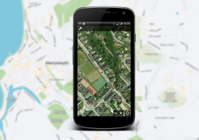

Hello I am Luke Ward, welcome to my life
I like to make things for the web and experiment with new technologiesWebsites
-
HackThis!!
A handbuilt security community. Offering 40+ levels, forum, user profiles, messaging and a whole lot more. The site now has over 180,000 registered users.
- OO-PHP
- MySQL (trigger, stored procedures)
- CSS3 (SASS)
- HTML5
- JQuery
- Node.js
-
BBC News Features
A handbuilt security community. Offering 40+ levels, forum, user profiles, messaging and a whole lot more. The site now has over 180,000 registered users.
Selection of work: Dive the Mariana Trench, Build a bionic body, Explore the Jubilee Pageant, Build a bionic body, Faces of the Titanic
- HTML
- CSS
- JQuery
Mobile
-

MapWars
For my final year dissertation I built a location-aware multiplater real time stratergy game. The core concept revoloved around the users location being used to position the player within the virtual world. They could then only control their units within a given range of that location. This forced players to move around the real world to access and unlock new places.
- Android
- Python
- SQLite